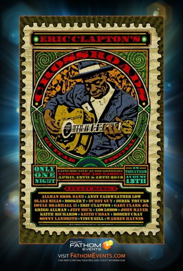

#3898 Eric Clapton's Crossroads Guitar Festival 2013
 
 IMDB-Wertung: 8.1 / 10
IMDB-Wertung: 8.1 / 10  Metascore: 0
Metascore: 0 
Captured across two nights at Madison Square Garden, the Crossroads Guitar Festival offers a variety of legendary guitarists performing a mix of sultry blues, classic rock and country jams. While Madison Square Garden is an epic arena, the concert remains intimate as Clapton and others collaborate on a sampling of the greatest hits of their careers. Held to benefit Crossroads Centre, a drug treatment and education facility in Antigua founded by Clapton, each concert has become a jam session of Clapton's closest friends and music's biggest stars - where anything can unfold onstage. In fact, this year's concert welcomed an impromptu visit from Keith Richards. A full list of participating artists can be found above. In addition to legendary guitar performances, cinema audiences will be treated to exclusive behind-the-scenes footage from this year's Crossroads Guitar Festival. You won't want to miss your chance to see the past, the present and the future come together for an unparalleled ...
Jahr: 2013
Dauer: 250 Minuten
FSK:
Land: USA Studio: NCM FathomTonspuren:
Untertitel:
Auflösung: 1080p (1920x1080) Größe: 10076 MB
Genre: Musik
Regisseur: Martyn Atkins
Drehbuch: Christian Vuissa
Soundtrack:
Darsteller:
- Booker T. Jones als Himself
- Buddy Guy als Himself
- Eric Clapton als Himself
- Gary Clark Jr. als Himself
- Gregg Allman als Himself
- Jeff Beck als Himself
- John Mayer als Himself
- Keith Richards als Himself
- Keith Urban als Himself
- Vince Gill als Himself
- Steve Cropper als
- B.B. King als
- Taj Mahal als
- Keb' Mo' als
- Robert Randolph als
- Robbie Robertson als
- Jimmie Vaughan als
- The Allman Brothers Band als Himself
- Blake Mills als Himself
- Derek Trucks als Himself
- Doyle Bramhall II als Himself
- Los Lobos als Himself
- Robert Cray als Himself
- Sonny Landreth als Himself
- Warren Haynes als Himself
- Paul Carrack als
- Citizen Cope als
- Andy Fairweather Low als
- Beth Hart als
- Earl Klugh als
- Albert Lee als
- Matt Murphy als
- Kurt Rosenwinkel als
- Alice Smith als
- Quinn Sullivan als
- Tal Wilkenfeld als
Datei: X:\Musik\Eric Clapton's Crossroads Guitar Festival 2013 (2013, FSK, 1920x1080) - CD1.mkv seit 29.06.2016
Festplatte: HD Serien(SU-Z)+Dokus+Musik
 Es gibt insgesamt 134 Filme in der Gruppe 'Musik'
Es gibt insgesamt 134 Filme in der Gruppe 'Musik'